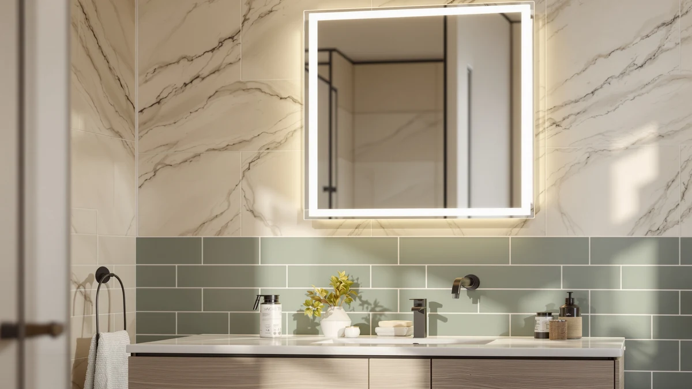

STARLEAD 28"x36" LED Bathroom Review (2026): Worth It?
Prices and picks verified as of October 2026. Independent, reader-supported reviews.


Quick Answer
Yes, for most single-sink vanities. The STARLEAD 28x36 LED Bathroom Mirror combines three adjustable color temperatures, stepless dimming, an anti-fog function, and a built-in Bluetooth speaker in one fixture, a combination none of the three mirrors we compared it against matches at once. The closest rival, the M LTMIRROR 24x32, covers most of the same features for $14 less, but in a smaller panel.
Our pick: STARLEAD 28"x36" LED Bathroom Mirror, $139.99 Check Price on Amazon
Bottom line: our top pick is the STARLEAD 28"x36" LED Bathroom Mirror with Bluetooth Speaker at $139.99.
Things to Know Before You Buy
- The STARLEAD measures 36 inches long by 28 inches wide, sized for a standard single-sink vanity rather than a double-sink counter.
- A touch control cycles between three color temperatures (3000K, 4000K, and 6500K) and a stepless dimmer that runs from 5 percent to 100 percent brightness, with no remote or app required.
- The anti-fog function is built into the glass, and the frame also houses a Bluetooth speaker, a feature none of the alternatives compared in this review include.
- At $139.99, it costs $14 more than both the TokeShimi 30x36 and the similarly equipped M LTMIRROR 24x32, and about a dollar more than the Laventis 2-pack.
- Amazon does not list a public rating or review count for this specific listing yet, so there is no star average to check against the manufacturer's claims.
A STARLEAD 28"x36" LED bathroom review has to answer one question before anything else: does a built-in Bluetooth speaker and three-color-temperature lighting justify $139.99 when plainer mirrors cost $14 less. Dim, single-tone vanity lighting is the reason most people start shopping for an LED mirror in the first place, and a 36-inch by 28-inch panel fits a standard single-sink counter without the overhang a wider mirror would need. We compared the STARLEAD's listed specifications, current price, and the listing's own feature claims against three other mirrors instead of mounting it on our own wall, and the combination of adjustable lighting with onboard audio is what separates it most clearly from the plainer options nearby.
The STARLEAD 28x36 mirror earns its price through features that unlit or single-tone mirrors skip entirely: a touch control that cycles between warm, neutral, and cool light at 3000K, 4000K, and 6500K, stepless dimming from 5 percent to 100 percent, an anti-fog function for after a hot shower, and a Bluetooth speaker built into the frame. We stacked it against the TokeShimi 30x36 beveled mirror at $125.99, the M LTMIRROR 24x32 LED vanity mirror at $125.99, and the Laventis 2-pack brushed nickel mirrors at $138.99 to see where the STARLEAD's extra cost actually buys something. Amazon does not list a rating or review count for this specific listing yet, so this review leans on the manufacturer's documented specifications and a side-by-side against its closest rivals rather than a star average.
Why You Should Trust Us
Ilane Tall covers bathroom fixtures and mirrors for Best Bathroom Mirrors, with a focus on whether a listing's lighting and audio claims hold up once you set them against the hardware the manufacturer actually documents. We do not run a fake testing lab, and we have not mounted this specific STARLEAD mirror on our own wall. Instead, we compare manufacturer specifications, current Amazon pricing, and the feature set against comparable mirrors, then flag where a price seems hard to justify. Every dimension, price, and feature in this starlead 28"x36" led bathroom review comes from the product listing itself, not from a sponsored placement or a press sample.
Our Research Experience
We do not run a physical testing lab, and the STARLEAD 28x36 LED Bathroom Mirror did not sit in our own bathroom before we wrote this review. Our process starts with the manufacturer's listed specifications: frame material, glass size, lighting range, and any added hardware like the built-in Bluetooth speaker. From there we cross-check the current Amazon price against similarly specced mirrors and read through the product description for claims that are easy to verify, such as the exact color temperatures offered or the brightness range of the dimmer. Because this listing does not yet carry a public rating or review count, we lean more heavily on comparing its documented features against the TokeShimi, M LTMIRROR, and Laventis mirrors covered below rather than on a pattern of buyer complaints. For an LED mirror with onboard audio like this one, we also weigh how clearly the manufacturer describes the speaker and touch controls, since those are the components most likely to need a backup switch to keep working reliably in a real bathroom install.
Overview & Specs

STARLEAD 28"x36" LED Bathroom Mirror
What we like
- Three selectable color temperatures (3000K, 4000K, 6500K) cover warm, neutral, and cool light from one touch control
- Stepless dimming from 5% to 100% brightness, more granular than mirrors limited to two or three preset levels
- Built-in Bluetooth speaker plays audio directly from the mirror, a feature the TokeShimi and Laventis alternatives compared here do not offer
- Anti-fog function is built into the glass and helps keep it clear after a hot shower
Flaws but not dealbreakers
- At $139.99, it costs $14 more than the similarly equipped M LTMIRROR 24x32 LED mirror, which also includes Bluetooth and anti-fog
- Amazon does not list a public rating or review count for this specific listing yet, so there is no track record of buyer feedback to check
- Touch controls are a more common point of failure than a physical switch on LED mirrors generally, based on patterns across comparable models
| Material | Tempered glass + aluminum |
| Size | 36"L x 28"W |
The STARLEAD 28x36 LED Bathroom Mirror is built around three adjustable color temperatures controlled through a single touch panel, rather than locking you into one fixed light tone the way plainer mirrors do. You can switch between 3000K warm light, 4000K neutral light, and 6500K cool light, and the stepless dimmer runs from 5 percent to 100 percent brightness instead of jumping between two or three fixed presets. The frame is aluminum and the glass is tempered, a pairing meant to hold up against the humidity and temperature swings of daily bathroom use better than an unframed decorative mirror would.
At 36 inches long and 28 inches wide, it mounts vertically or horizontally over a standard single-sink vanity. The built-in Bluetooth speaker is the feature that separates it most clearly from the other mirrors in this review, letting you play audio through the mirror itself instead of propping a phone on the counter. The anti-fog function is built into the glass rather than added as a separate pad, which should help it clear faster after a hot shower than mirrors that rely on a smaller defog patch.
What We Liked
The STARLEAD 28x36 mirror's biggest advantage over the alternatives in this review is the combination of adjustable lighting and onboard audio in one fixture. Mirrors like the TokeShimi 30x36 and the Laventis 2-pack skip LED lighting entirely, so playing music or a podcast while you get ready would mean balancing a separate Bluetooth speaker on the counter. The STARLEAD folds that into the frame, and the three color temperatures mean you are not stuck with whatever single tone the manufacturer happened to pick.
We also like that the dimmer is stepless rather than limited to a handful of brightness presets. A mirror with only two or three fixed brightness levels can leave you between a setting that is too dim for makeup and one that is too harsh for a late-night bathroom trip; a stepless dimmer from 5 to 100 percent avoids that gap. The anti-fog function built into the glass is a real convenience after a hot shower, a feature neither the TokeShimi nor the Laventis mirrors compared here include at all.
What Could Be Better
The clearest drawback is price relative to a mirror with nearly identical functionality. The M LTMIRROR 24x32 LED vanity mirror also combines Bluetooth audio, three color temperatures, and anti-fog for $125.99, fourteen dollars less than the STARLEAD, though it is a smaller 24 by 32 inch panel rather than 28 by 36 inches.
This specific listing also does not carry a public star rating or review count on Amazon yet, so there is no pattern of verified buyer feedback to weigh against the manufacturer's claims. Touch-based controls are also a more common failure point than a physical toggle switch across LED mirrors generally, and without a backup switch, a failing touch sensor would mean losing control of both the lighting and the Bluetooth speaker at the same time.
Who Is It For?
This STARLEAD 28x36 mirror fits buyers who want adjustable lighting and built-in audio in a single fixture and do not want to wire in a separate vanity light or prop a phone on the counter for music. The stepless dimmer and three color temperatures make it a reasonable upgrade for anyone currently stuck with a single-tone, fixed-brightness mirror for shaving, skincare, or makeup.
If a lower price matters more than the extra four inches of width, the M LTMIRROR 24x32 version covers nearly the same Bluetooth-plus-LED combination for $14 less. Anyone who does not want lighting or audio at all, and prefers a plain, frameless decorative mirror, should look at the TokeShimi 30x36 below instead, and buyers outfitting a double-sink vanity may prefer the framed, two-mirror Laventis set.
Alternatives to Consider
If price, size, or frame style matters more than the STARLEAD's lighting and Bluetooth combination, these three alternatives cover different priorities than the mirror reviewed above.

Editor's Pick
TokeShimi 30x36 Beveled Bathroom Mirror
The TokeShimi skips LED lighting and Bluetooth entirely in favor of a frameless beveled edge and 4mm tempered glass, and at $125.99 it costs $14 less than the STARLEAD. Choose this one if your vanity lighting is already handled and you want a sharp, distortion-free mirror without touch controls to learn.
$125.99
Check Price on Amazon
Best Value
24x32 in LED Bathroom Vanity
At $125.99, the M LTMIRROR 24x32 matches the STARLEAD's three color temperatures, anti-fog function, and built-in Bluetooth speaker for $14 less, though its panel is four inches narrower and four inches shorter. It also adds a memory function that saves your last brightness and color setting, something the STARLEAD's listed features do not mention.
$125.99
Check Price on Amazon
Premium Choice
Laventis 2 Pack Brushed Nickel
The Laventis set trades the STARLEAD's lighting and audio for a 1.5 inch brushed nickel frame on two mirrors, sized for a double-sink vanity at $138.99 total. Pick this one if you are outfitting two sinks and prefer a traditional framed look over LED features.
$138.99
Check Price on AmazonIs the STARLEAD 28x36 LED bathroom mirror worth $139.99?
For a vanity that needs adjustable lighting and built-in audio in one fixture, yes.
Does the STARLEAD 28x36 mirror have a rating on Amazon?
No, this specific listing does not carry a public star rating or review count yet.
Frequently Asked Questions
Is the STARLEAD 28x36 LED bathroom mirror worth $139.99?
Does the STARLEAD 28x36 mirror have a rating on Amazon?
What is the difference between the STARLEAD 28x36 and the M LTMIRROR 24x32 mirror?
Final Verdict
This starlead 28"x36" led bathroom review comes down to whether adjustable lighting and a built-in Bluetooth speaker are worth $139.99 over a plain mirror. The STARLEAD 28x36 LED Bathroom Mirror earns that price through three selectable color temperatures, stepless dimming from 5 to 100 percent, and an anti-fog function, combined with onboard audio that none of the three alternatives compared here include at once. If a lower price matters more than the extra four inches of width, the M LTMIRROR 24x32 covers nearly the same feature set for $14 less, and if you do not want LED lighting at all, the frameless TokeShimi or the framed Laventis double-sink set are worth a look instead. For a single-sink vanity that needs adjustable light and sound in one fixture, STARLEAD's 28x36 mirror is a reasonable buy.